← 返回阅读库 · 原论文目录
论文讲解阅读文档 · 论文精读 · v235
你的ViT一直在用背景做分类！ LaSt-ViT【CVPR'26】
视频时长 00:07:39；讲解文字 2,681 字符；提取讲解画面 158 张。按视频原顺序阅读，每段文字保留时间戳。
文字来自整段视频的自动语音转写，按自然停顿分段，并与 PPT / 论文页面 / 演示画面对齐。未将讲解压缩为摘要；术语、数字和口述公式请结合画面及原论文核对。 阅读稿已校正规范部分明确术语误识别；原始逐字稿和每处修改记录另行保留。
讲解画面为源视频截图（638×360），不是可编辑 PPT 文件。全片按每秒 2 帧扫描内容变化，逐步展开页保留；连续动画保留代表画面。清晰度受源视频限制。
下载完整资料包 · 含离线 HTML、PDF、Word、全部 PPT 画面和字幕。
原论文与材料
Vision Transformers Need More Than Registers · 下载完整 PDF（10 页）
按时间阅读
00:00:00–00:00:01 · 画面 001
00:00:00–00:00:01 · 画面 001这是一只狗，但当你问 AI 是依据什么来判别这是狗时，答案可能会出乎你的意料。研究发现，现在几乎所有的 SOTA 视觉模型根本没在看前景物体，全在靠背景偷偷做分类。也就是说，你训了几个月的 VIT 其实是个背景识别器。
00:00:01–00:00:02 · 画面 002
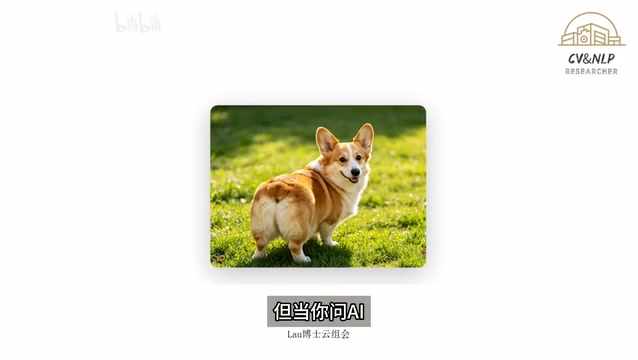
00:00:01–00:00:02 · 画面 00200:00:02–00:00:04 · 画面 003
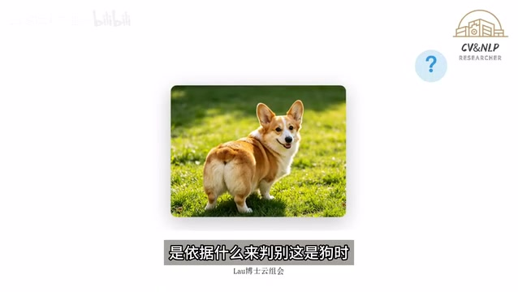
00:00:02–00:00:04 · 画面 00300:00:04–00:00:07 · 画面 004
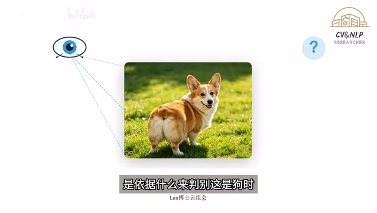
00:00:04–00:00:07 · 画面 00400:00:07–00:00:08 · 画面 005
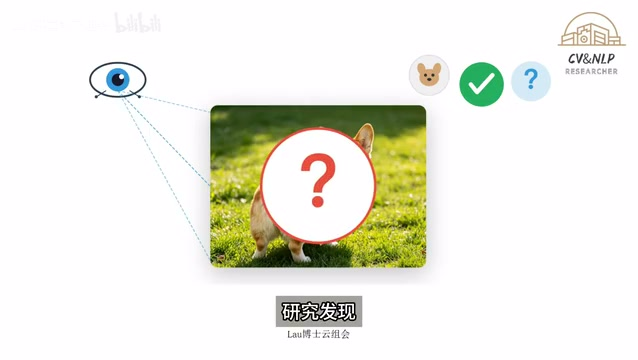
00:00:07–00:00:08 · 画面 00500:00:08–00:00:09 · 画面 006
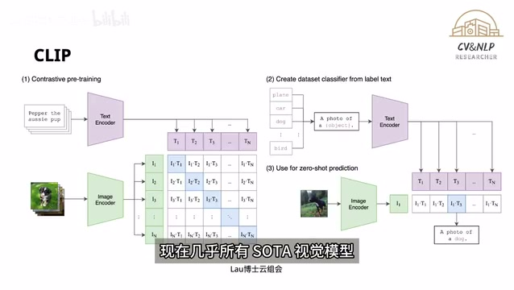
00:00:08–00:00:09 · 画面 00600:00:09–00:00:10 · 画面 007
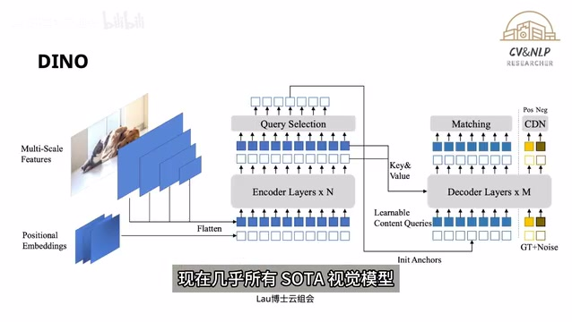
00:00:09–00:00:10 · 画面 00700:00:10–00:00:14 · 画面 008
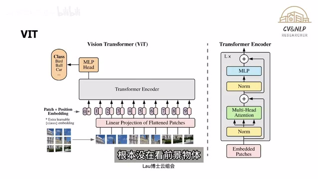
00:00:10–00:00:14 · 画面 00800:00:14–00:00:18 · 画面 009
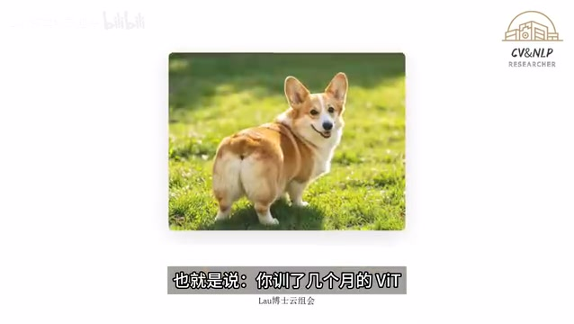
00:00:14–00:00:18 · 画面 00900:00:18–00:00:22 · 画面 010
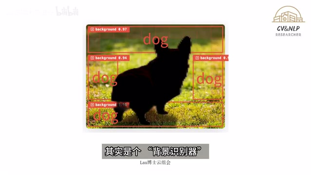
00:00:18–00:00:22 · 画面 010本期论文精读代理看懂 CVPR2026 最颠覆的工作之一 LaSt-ViT 他不仅发现了视觉问题的本质而且只用一招就根治了全监督、文本监督、自监督三大范式通病让 VIT 真正看懂前景在 12 个基准上全线暴涨那话不多说点赞收藏方便回看接下来一起进入本期云组会
00:00:22–00:00:26 · 画面 011
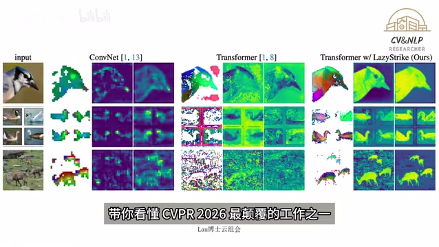
00:00:22–00:00:26 · 画面 01100:00:26–00:00:29 · 画面 012
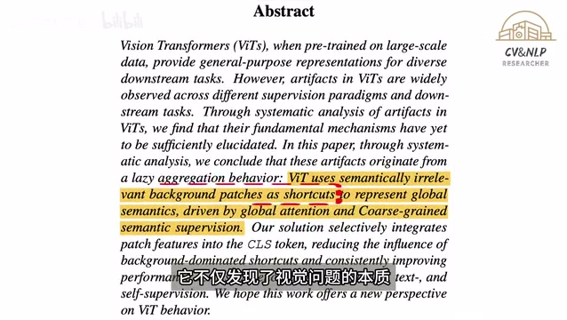
00:00:26–00:00:29 · 画面 01200:00:29–00:00:32 · 画面 013
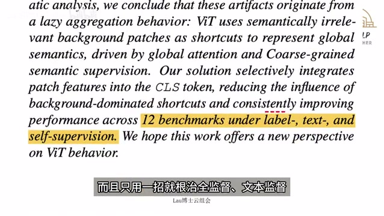
00:00:29–00:00:32 · 画面 01300:00:32–00:00:34 · 画面 014
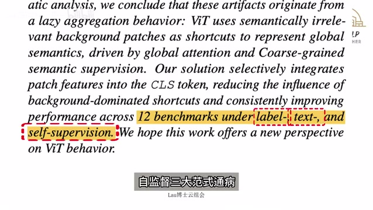
00:00:32–00:00:34 · 画面 01400:00:34–00:00:35 · 画面 015
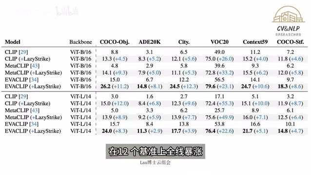
00:00:34–00:00:35 · 画面 01500:00:35–00:00:39 · 画面 016
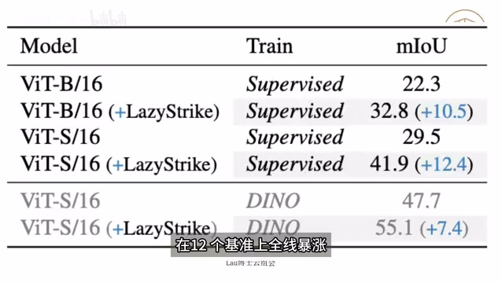
00:00:35–00:00:39 · 画面 01600:00:39–00:00:43 · 画面 017
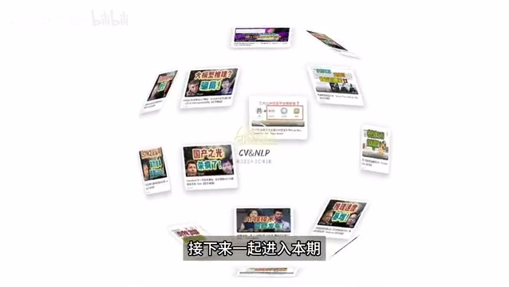
00:00:39–00:00:43 · 画面 01700:00:43–00:00:46 · 画面 018
00:00:43–00:00:46 · 画面 01800:00:46–00:00:47 · 画面 019
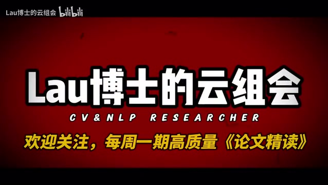
00:00:46–00:00:47 · 画面 01900:00:47–00:00:50 · 画面 020
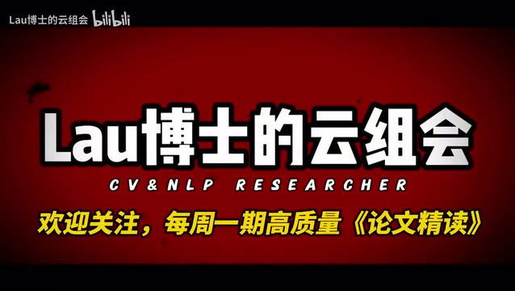
00:00:47–00:00:50 · 画面 02000:00:50–00:00:52 · 画面 021
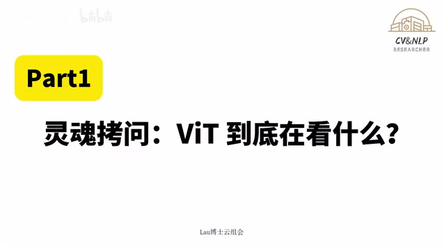
00:00:50–00:00:52 · 画面 021先问大家三个问题：为什么 VIT 分类很猛，但一到了检测、分割、多模态就拉胯？为什么 Clip 的密集特征总是对不准，分割的效果稀碎？为什么 DINO 必须加 register，不然全是高范数伪影？过去三年学界给出各种解决方案，有人加 register，有人改窗口注意力，还有人用复杂的蒸馏，但没人回答最关键的问题。这些问题是不是来自同一个根源？
00:00:52–00:00:54 · 画面 022
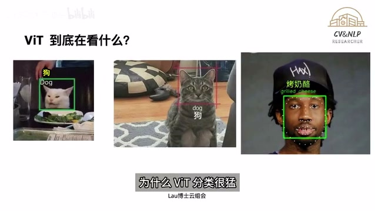
00:00:52–00:00:54 · 画面 02200:00:54–00:00:56 · 画面 023
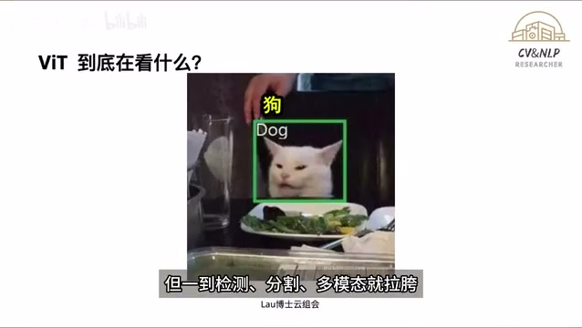
00:00:54–00:00:56 · 画面 02300:00:56–00:00:58 · 画面 024
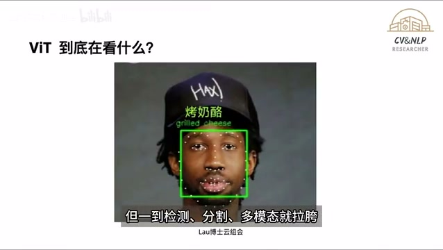
00:00:56–00:00:58 · 画面 02400:00:58–00:01:01 · 画面 025
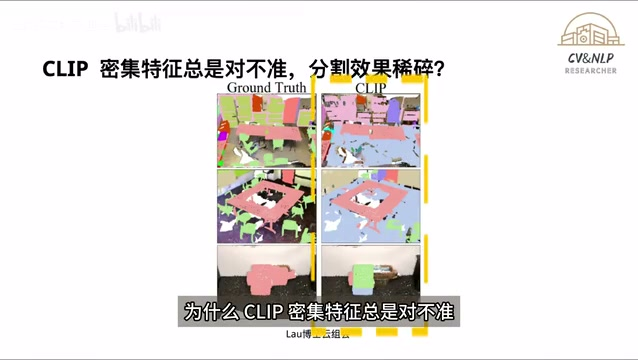
00:00:58–00:01:01 · 画面 02500:01:01–00:01:05 · 画面 026
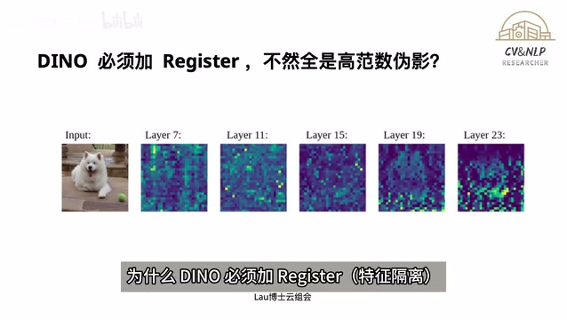
00:01:01–00:01:05 · 画面 02600:01:05–00:01:09 · 画面 027
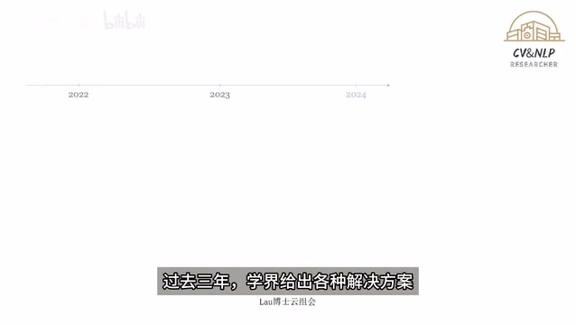
00:01:05–00:01:09 · 画面 02700:01:09–00:01:14 · 画面 028
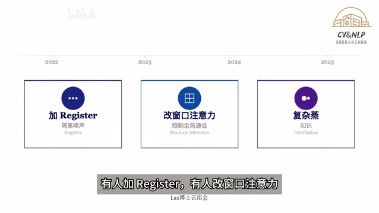
00:01:09–00:01:14 · 画面 02800:01:14–00:01:16 · 画面 029
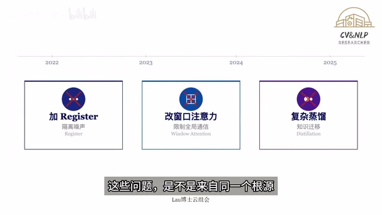
00:01:14–00:01:16 · 画面 029今天港大和中大团队为我们解答这个问题。是，而且根源只有四个字：懒惰聚合。简单来说，在粗粒度监督加全局注意力双重加持下，VIT 学会了最简单的作弊路径，把前景语义扩散到了背景，用背景的 patch 做全局编码，完全不聚焦物体的本身。论文指出了三个关键证据。
00:01:16–00:01:21 · 画面 030
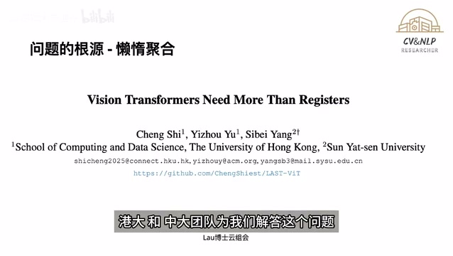
00:01:16–00:01:21 · 画面 03000:01:21–00:01:23 · 画面 031
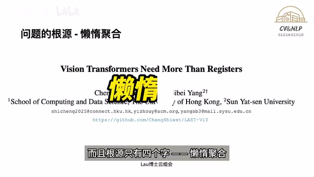
00:01:21–00:01:23 · 画面 03100:01:23–00:01:24 · 画面 032
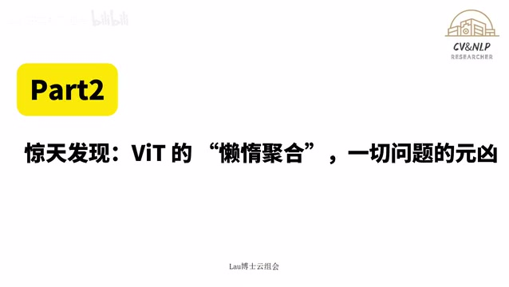
00:01:23–00:01:24 · 画面 03200:01:24–00:01:25 · 画面 033
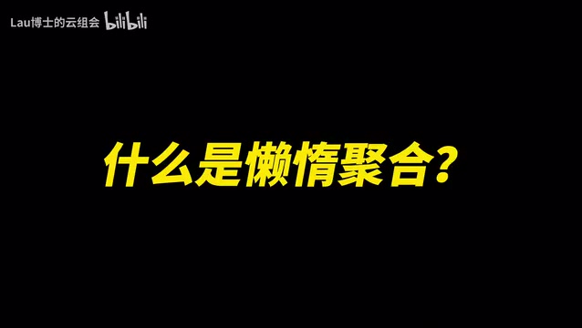
00:01:24–00:01:25 · 画面 03300:01:25–00:01:35 · 画面 034
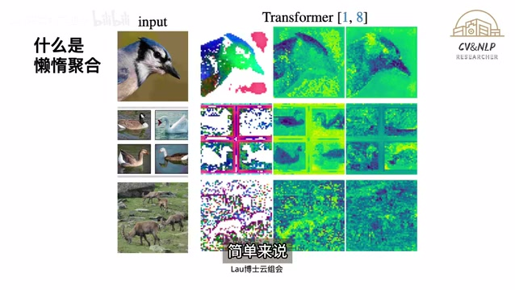
00:01:25–00:01:35 · 画面 03400:01:35–00:01:40 · 画面 035
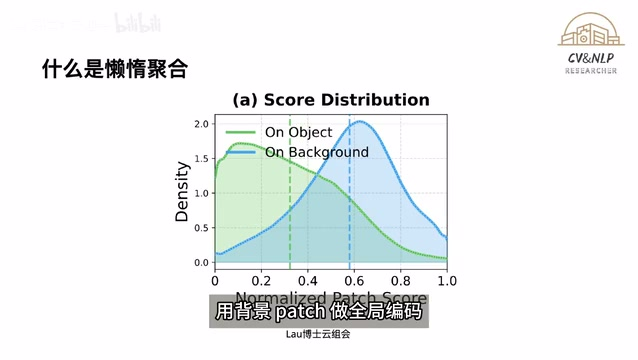
00:01:35–00:01:40 · 画面 03500:01:40–00:01:41 · 画面 036
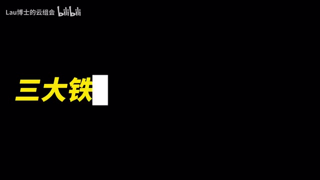
00:01:40–00:01:41 · 画面 03600:01:41–00:01:42 · 画面 037
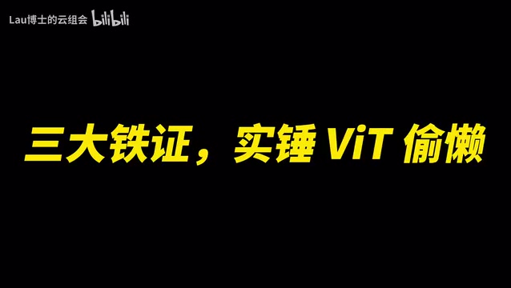
00:01:41–00:01:42 · 画面 037第一个证据，VIT 训练时就更关注背景。从训练的曲线可以看到，VIT 从第一个 Epoch 就偏爱背景，整个训练过程都不会改变。而基于卷积计算的 ResNet 完全没有这个毛病。第二，粗粒度监督逼他偷懒。做过分类任务的同学都知道，标签只告诉模型图里面有什么，却不告诉物体在哪里。背景的 Patch 数量本来就碾压前景。
00:01:42–00:01:46 · 画面 038
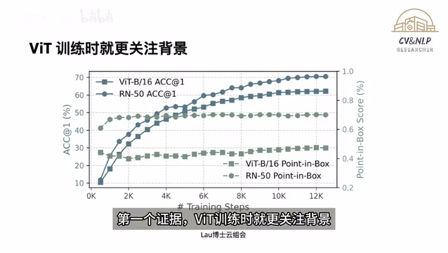
00:01:42–00:01:46 · 画面 03800:01:46–00:01:49 · 画面 039
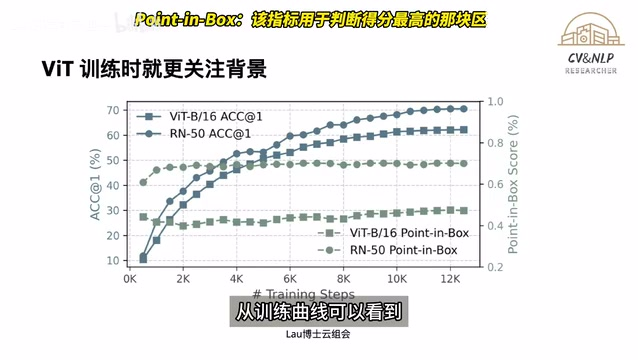
00:01:46–00:01:49 · 画面 03900:01:49–00:01:50 · 画面 040
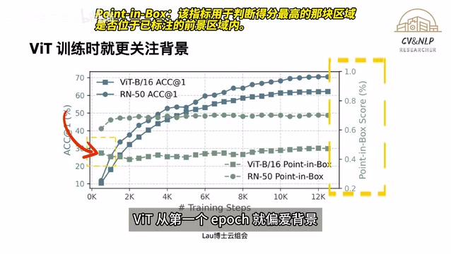
00:01:49–00:01:50 · 画面 04000:01:50–00:01:53 · 画面 041
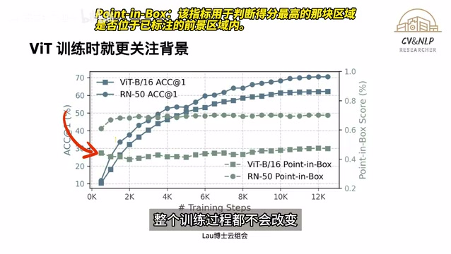
00:01:50–00:01:53 · 画面 04100:01:53–00:01:54 · 画面 042
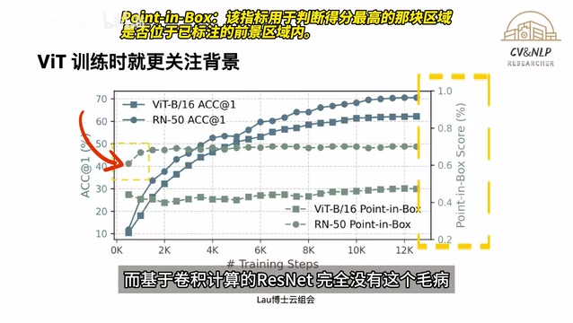
00:01:53–00:01:54 · 画面 04200:01:54–00:01:58 · 画面 043
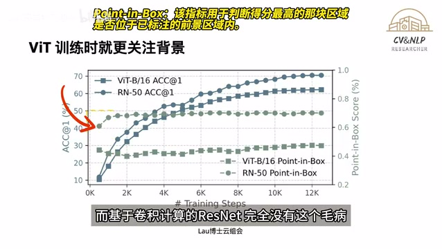
00:01:54–00:01:58 · 画面 04300:01:58–00:02:01 · 画面 044
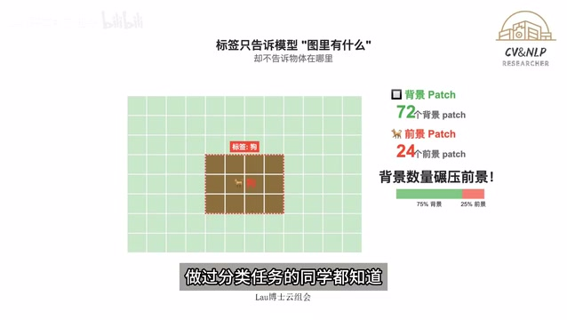
00:01:58–00:02:01 · 画面 04400:02:01–00:02:02 · 画面 045
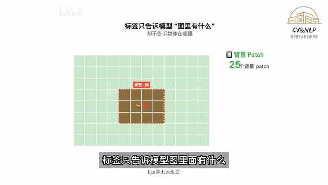
00:02:01–00:02:02 · 画面 04500:02:02–00:02:04 · 画面 046
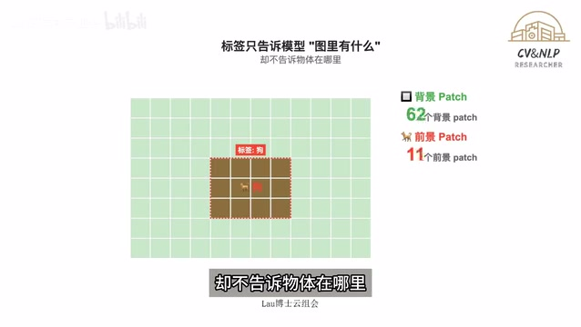
00:02:02–00:02:04 · 画面 04600:02:04–00:02:09 · 画面 047
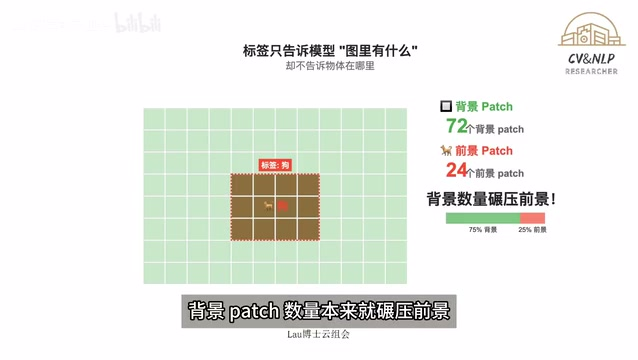
00:02:04–00:02:09 · 画面 047模型当然会选择最省力的路径研究团队也做了实验把 Patch 从 16x16 改到 28x28PIB 从 0.44 提升到了 0.52 但准确率从 62%降到了 55%这就直接说明粗监督就是在鼓励模型偷懒第三 全局注意力是双刃剑全局注意力让所有的 Patch 都能互相通信前景语义直接被扩散到背景里
00:02:09–00:02:13 · 画面 048
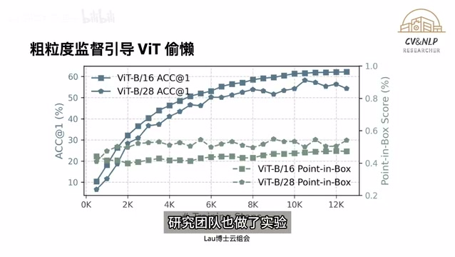
00:02:09–00:02:13 · 画面 04800:02:13–00:02:14 · 画面 049
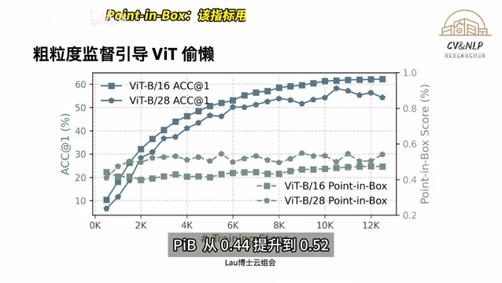
00:02:13–00:02:14 · 画面 04900:02:14–00:02:19 · 画面 050
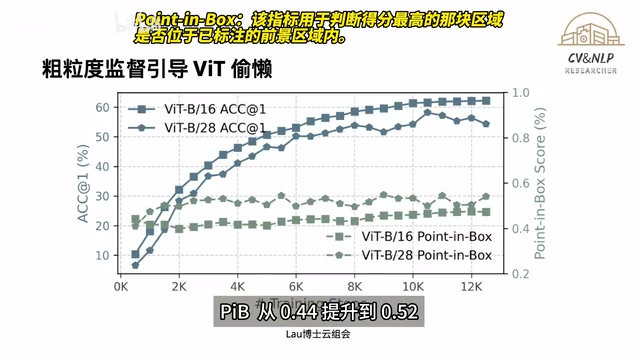
00:02:14–00:02:19 · 画面 05000:02:19–00:02:23 · 画面 051
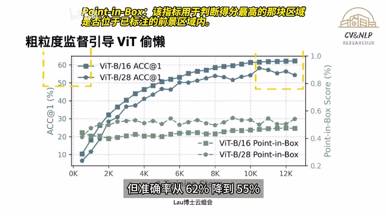
00:02:19–00:02:23 · 画面 05100:02:23–00:02:25 · 画面 052
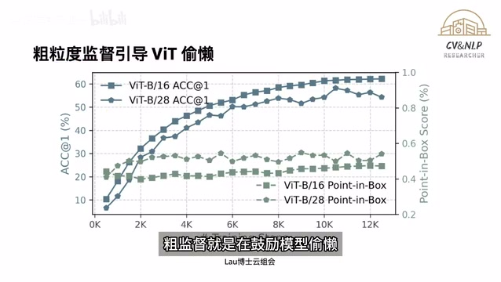
00:02:23–00:02:25 · 画面 05200:02:25–00:02:28 · 画面 053
00:02:25–00:02:28 · 画面 05300:02:28–00:02:33 · 画面 054
00:02:28–00:02:33 · 画面 054如果换成窗口注意力 PIB 从 50.1 涨到 59.8 可是分类性能从 72.3 降到了 63.9 愈合雄长传统的 VIT 永远不可兼得所以说 VIT 不是在识别物体而是在识别物体背后常出现的背景
00:02:33–00:02:35 · 画面 055
00:02:33–00:02:35 · 画面 05500:02:35–00:02:39 · 画面 056
00:02:35–00:02:39 · 画面 05600:02:39–00:02:43 · 画面 057
00:02:39–00:02:43 · 画面 05700:02:43–00:02:44 · 画面 058
00:02:43–00:02:44 · 画面 05800:02:44–00:02:48 · 画面 059
00:02:44–00:02:48 · 画面 05900:02:48–00:02:52 · 画面 060
00:02:48–00:02:52 · 画面 060识别狗靠着草地，识别车靠着马路，一旦背景乱一点，模型就会出错。这就是为什么检测定位不准，分割边缘模糊，开放词汇泛化崩溃，自监督还会出现高范数伪影。所有的问题都根源在这里。
00:02:52–00:02:54 · 画面 061
00:02:52–00:02:54 · 画面 06100:02:54–00:02:57 · 画面 062
00:02:54–00:02:57 · 画面 06200:02:57–00:02:59 · 画面 063
00:02:57–00:02:59 · 画面 06300:02:59–00:03:01 · 画面 064
00:02:59–00:03:01 · 画面 06400:03:01–00:03:03 · 画面 065
00:03:01–00:03:03 · 画面 06500:03:03–00:03:04 · 画面 066
00:03:03–00:03:04 · 画面 06600:03:04–00:03:08 · 画面 067
00:03:04–00:03:08 · 画面 06700:03:08–00:03:09 · 画面 068
00:03:08–00:03:09 · 画面 068像 Clip 和 OpenClip 这类模型，Relocate 这段文本去做零样本分割，想让模型标出猫的位置，结果沙发、地板甚至天空都被标成了猫。真正的猫的边缘模糊，漏标严重。因为 Clip 训练时只对齐整张图和文本，模型发现只要背景里有点猫出现的环境就能蒙对分类，根本就不用精准的定位猫本身，导致密集的特征和语义严重不对齐，开放的词汇的分割效果非常拉胯。最后是自监督。
00:03:09–00:03:12 · 画面 069
00:03:09–00:03:12 · 画面 06900:03:12–00:03:15 · 画面 070
00:03:12–00:03:15 · 画面 07000:03:15–00:03:19 · 画面 071
00:03:15–00:03:19 · 画面 07100:03:19–00:03:21 · 画面 072
00:03:19–00:03:21 · 画面 07200:03:21–00:03:22 · 画面 073
00:03:21–00:03:22 · 画面 07300:03:22–00:03:24 · 画面 074
00:03:22–00:03:24 · 画面 07400:03:24–00:03:25 · 画面 075
00:03:24–00:03:25 · 画面 07500:03:25–00:03:29 · 画面 076
00:03:25–00:03:29 · 画面 07600:03:29–00:03:33 · 画面 077
00:03:29–00:03:33 · 画面 07700:03:33–00:03:35 · 画面 078
00:03:33–00:03:35 · 画面 07800:03:35–00:03:39 · 画面 079
00:03:35–00:03:39 · 画面 079比如 Dino 和 Dino V2，它的特征图背景区域比前景还亮，出现大量高范数 Token，注意力分布混乱，这就是高范数伪影。不加 Register 隔离的话，无监督物体发现任务完全没法用，本质就是全局聚合机制把背景噪声不断放大，最后形成了异常 Token。
00:03:39–00:03:43 · 画面 080
00:03:39–00:03:43 · 画面 08000:03:43–00:03:47 · 画面 081
00:03:43–00:03:47 · 画面 08100:03:47–00:03:51 · 画面 082
00:03:47–00:03:51 · 画面 08200:03:51–00:03:55 · 画面 083
00:03:51–00:03:55 · 画面 08300:03:55–00:03:59 · 画面 084
00:03:55–00:03:59 · 画面 084过去大家提出的 register、CLIPSelf 还有各种注意力改进的方法全都是针对单一问题打补丁，全监督加空间标注，文本监督改注意力，自监督加 register 隔离噪声，完全是治标不治本。而这篇论文最厉害的地方就是第一次给出了统一的病因，同时也给出了一套能统一根治的方案。
00:03:59–00:04:02 · 画面 085
00:03:59–00:04:02 · 画面 08500:04:02–00:04:04 · 画面 086
00:04:02–00:04:04 · 画面 08600:04:04–00:04:07 · 画面 087
00:04:04–00:04:07 · 画面 08700:04:07–00:04:13 · 画面 088
00:04:07–00:04:13 · 画面 08800:04:13–00:04:14 · 画面 089
00:04:13–00:04:14 · 画面 08900:04:14–00:04:20 · 画面 090
00:04:14–00:04:20 · 画面 09000:04:20–00:04:21 · 画面 091
00:04:20–00:04:21 · 画面 09100:04:21–00:04:25 · 画面 092
00:04:21–00:04:25 · 画面 092铺垫了这么久等级了吧方法终于来了本文提出的 LazyStrike 懒惰打击有三个最厉害的点无需额外标注不改动 VIT 架构推理零额外开销这究竟是怎么做到的呢?
00:04:25–00:04:26 · 画面 093
00:04:25–00:04:26 · 画面 09300:04:26–00:04:27 · 画面 094
00:04:26–00:04:27 · 画面 09400:04:27–00:04:31 · 画面 095
00:04:27–00:04:31 · 画面 09500:04:31–00:04:35 · 画面 096
00:04:31–00:04:35 · 画面 09600:04:35–00:04:36 · 画面 097
00:04:35–00:04:36 · 画面 09700:04:36–00:04:38 · 画面 098
00:04:36–00:04:38 · 画面 098俗话说得好，有效的方法往往来源于简单的洞察。论文通过分析发现，前景区域的语义更稳定，在通道维度上的变化更小，而背景区域杂乱无章，通道的波动非常大。所以只要筛选特征稳定的 Patch 就能自动锁定前景。
00:04:38–00:04:42 · 画面 099
00:04:38–00:04:42 · 画面 09900:04:42–00:04:46 · 画面 100
00:04:42–00:04:46 · 画面 10000:04:46–00:04:48 · 画面 101
00:04:46–00:04:48 · 画面 10100:04:48–00:04:49 · 画面 102
00:04:48–00:04:49 · 画面 10200:04:49–00:04:50 · 画面 103
00:04:49–00:04:50 · 画面 10300:04:50–00:04:51 · 画面 104
00:04:50–00:04:51 · 画面 10400:04:51–00:04:52 · 画面 105
00:04:51–00:04:52 · 画面 10500:04:52–00:04:53 · 画面 106
00:04:52–00:04:53 · 画面 10600:04:53–00:04:55 · 画面 107
00:04:53–00:04:55 · 画面 10700:04:55–00:04:56 · 画面 108
00:04:55–00:04:56 · 画面 108第一步，在通道维度做低通滤波，计算稳定性，对每个 Patch 特征做一维傅里叶变换，经过高斯低通载逆变换，最后算出稳定分数，分数越高就越可能是前景。第二步，做通道级的 TopK 稳定 Patch 聚合，每个通道只选择最稳定的 KPatch 来做聚合，强迫 CLS Token 只相信前景，彻底忽略背景。
00:04:56–00:05:00 · 画面 109
00:04:56–00:05:00 · 画面 10900:05:00–00:05:01 · 画面 110
00:05:00–00:05:01 · 画面 11000:05:01–00:05:04 · 画面 111
00:05:01–00:05:04 · 画面 11100:05:04–00:05:06 · 画面 112
00:05:04–00:05:06 · 画面 11200:05:06–00:05:10 · 画面 113
00:05:06–00:05:10 · 画面 11300:05:10–00:05:12 · 画面 114
00:05:10–00:05:12 · 画面 11400:05:12–00:05:14 · 画面 115
00:05:12–00:05:14 · 画面 11500:05:14–00:05:15 · 画面 116
00:05:14–00:05:15 · 画面 11600:05:15–00:05:19 · 画面 117
00:05:15–00:05:19 · 画面 11700:05:19–00:05:23 · 画面 118
00:05:19–00:05:23 · 画面 118第三步 ，用投票机制进一步提存前景，统计每个 Patch 在多个通道里被选中的次数，次数越高 ，权重越大，让前景特征彻底主导全局信息。LazyStrike 完全不需要额外的标注，不改动 VIT 原有的架构，只在预训练阶段生效，全监督 、文本监督 、自监督三种方式全部通用，而且推理的阶段没有任何额外的开销。
00:05:23–00:05:27 · 画面 119
00:05:23–00:05:27 · 画面 11900:05:27–00:05:28 · 画面 120
00:05:27–00:05:28 · 画面 12000:05:28–00:05:32 · 画面 121
00:05:28–00:05:32 · 画面 12100:05:32–00:05:34 · 画面 122
00:05:32–00:05:34 · 画面 12200:05:34–00:05:36 · 画面 123
00:05:34–00:05:36 · 画面 12300:05:36–00:05:38 · 画面 124
00:05:36–00:05:38 · 画面 12400:05:38–00:05:41 · 画面 125
00:05:38–00:05:41 · 画面 12500:05:41–00:05:43 · 画面 126
00:05:41–00:05:43 · 画面 12600:05:43–00:05:46 · 画面 127
00:05:43–00:05:46 · 画面 127真正做到一次修改，所有任务都能稳定涨点。我想肯定有同学会问，这不就是做了个数据预处理吗？好像也没啥创新啊。对这个问题，六博士认为，一个好的工作并不是要提出多么复杂的概念和算法，而是能找到真正的问题并用足够简单的方法解决它，less is more。
00:05:46–00:05:50 · 画面 128
00:05:46–00:05:50 · 画面 12800:05:50–00:05:53 · 画面 129
00:05:50–00:05:53 · 画面 12900:05:53–00:06:02 · 画面 130
00:05:53–00:06:02 · 画面 13000:06:02–00:06:03 · 画面 131
00:06:02–00:06:03 · 画面 13100:06:03–00:06:04 · 画面 132
00:06:03–00:06:04 · 画面 132空口无凭我们来看数据在全监督 VIT 上出分割任务 VOC12 数据集从 22.3%暴涨到 32.8%相当于凭空多出了物体定位的超能力
00:06:04–00:06:09 · 画面 133
00:06:04–00:06:09 · 画面 13300:06:09–00:06:10 · 画面 134
00:06:09–00:06:10 · 画面 13400:06:10–00:06:14 · 画面 135
00:06:10–00:06:14 · 画面 13500:06:14–00:06:15 · 画面 136
00:06:14–00:06:15 · 画面 13600:06:15–00:06:17 · 画面 137
00:06:15–00:06:17 · 画面 137在文本监督 Clip 上语义分割 VOC20 从 49.0 直接冲到了 75.0 直接从能用的水平变成了 SOTA 的级别在自监督 DINO 上不用 Register 也能实现无监督物体发现性能达到 67.6%高范数伪影直接消失再看 PCA 可视化对比普通的 VIT 并不能很好的区分前景和背景
00:06:17–00:06:19 · 画面 138
00:06:17–00:06:19 · 画面 13800:06:19–00:06:23 · 画面 139
00:06:19–00:06:23 · 画面 13900:06:23–00:06:24 · 画面 140
00:06:23–00:06:24 · 画面 14000:06:24–00:06:26 · 画面 141
00:06:24–00:06:26 · 画面 14100:06:26–00:06:34 · 画面 142
00:06:26–00:06:34 · 画面 14200:06:34–00:06:37 · 画面 143
00:06:34–00:06:37 · 画面 14300:06:37–00:06:41 · 画面 144
00:06:37–00:06:41 · 画面 144而 VIT 加上了 LazyStrike 之后，不但能区分前景和背景，并且能区分物体的各个部位。微软亚研院创办人詹雅琴曾说，好的 AI 不是理和数据，而是理解世界。而 LaSt-ViT 证明 VIT 过去一直在理和背景，从未真正的理解前景。图灵奖得主勒昆也反复的强调，机器学习最大的陷阱是捷径。
00:06:41–00:06:45 · 画面 145
00:06:41–00:06:45 · 画面 14500:06:45–00:06:47 · 画面 146
00:06:45–00:06:47 · 画面 14600:06:47–00:06:51 · 画面 147
00:06:47–00:06:51 · 画面 14700:06:51–00:06:54 · 画面 148
00:06:51–00:06:54 · 画面 14800:06:54–00:06:59 · 画面 149
00:06:54–00:06:59 · 画面 14900:06:59–00:07:03 · 画面 150
00:06:59–00:07:03 · 画面 15000:07:03–00:07:05 · 画面 151
00:07:03–00:07:05 · 画面 151今天我们终于看清了，VIT 的捷径是懒惰聚合。这边工作的价值不在于涨点，而在于正本清源。他第一次统一三大监督范式的并根，用最简单的方式修正了 Transformer 最底层的优化偏差。正如教父 Hinton 所言，只要找到正确的归纳偏置，简单算法胜过复杂的结构。对所有的研究者而言，这是一记清醒的提醒。
00:07:05–00:07:18 · 画面 152
00:07:05–00:07:18 · 画面 15200:07:18–00:07:22 · 画面 153
00:07:18–00:07:22 · 画面 15300:07:22–00:07:26 · 画面 154
00:07:22–00:07:26 · 画面 15400:07:26–00:07:30 · 画面 155
00:07:26–00:07:30 · 画面 155比堆模型、堆数据更重要的是，先让模型走正路。OK，以上就是本期云组会的全部内容。如果你对 AI 感兴趣，或者想看更多硬核解读，欢迎关注我们，成为云组会的一员。
00:07:30–00:07:34 · 画面 156
00:07:30–00:07:34 · 画面 15600:07:34–00:07:38 · 画面 157
00:07:34–00:07:38 · 画面 15700:07:38–00:07:39 · 画面 158
00:07:38–00:07:39 · 画面 158转写与来源说明 · 0 个自动复核提示
保留 21 个原始语音片段，0 个片段触发自动复核提示。提示仅用于定位可能的术语、重复或识别问题，不等于已确认错误。
讲解画面为源视频截图（638×360），不是可编辑 PPT 文件。全片按每秒 2 帧扫描内容变化，逐步展开页保留；连续动画保留代表画面。清晰度受源视频限制。
原视频：paper/合集_2026-10-16_论文精读/你的ViT一直在用背景做分类！ LaSt-ViT【CVPR'26】.mp4
SHA-256：12192f9f388d6e10f10ab5f8ed60d6cfd0dae21626a8cd8ebc6c955275116751
全文按视频语音与画面制作。原论文可从上方链接下载；完整资料包保留全文、原始逐字稿、字幕和校对记录。